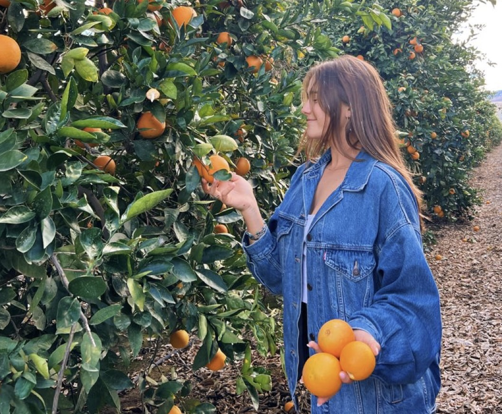

Italy has always been one of my dream places to visit. There are so many beutiful views and country sides paired with the graduer of very impressive history, art, and architecture. Here are some of the cities in Italy I would love to visit:
Below is a map of Italy that has additional sites listed as options.
I think that taking photos in a lemon orchard is an amazing idea since My last name is Lemmon, and so I have always loved lemons. I love nature and photography, plus yellow is one of my favorite colors. So, I think this is a perfect idea. Here is a photo of my insporation (except of course the oranges would be lemons):
Something I love to do is paint. It is a talent I have, and my favorite thing to paint is nature. It comes in handy that being in nature is one of the places I love to spend the most time in. So, one day I will pack up a bunch of painting supplies and I will go hiking until I find an amazing view, and then I will paint what I see. I think that will be an amazing experience. Here is a video example of someone who did something very similar to this.